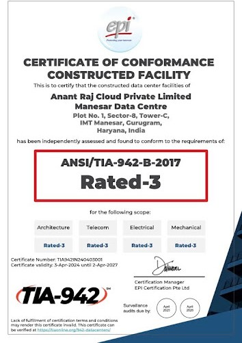
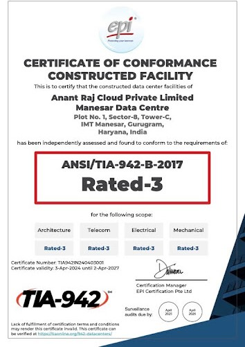

Certifications
TIA-942B Rated 3 Certified
IGBC Precertified Gold Certification

The Company & Us
Welcome to Anant Raj Data Centers, your trusted partner in powering India's digital future. As a subsidiary of Anant Raj Limited, a leading name in Indian real estate, we bring decades of expertise and a commitment to excellence to the realm of data center solutions. With a focus on innovation, reliability, and customer satisfaction, we deliver cutting-edge infrastructure and services tailored to the unique needs of businesses across the nation. From colocation and managed hosting to advanced security and connectivity solutions, Anant Raj Data Centers is your gateway to a smarter, more resilient digital landscape. Partner with us and unlock the potential of tomorrow, today
Read MoreAt Anant Raj Data Centers, our vision is to be the foremost provider of innovative and reliable data center solutions in India. We aspire to empower businesses of all sizes to harness the power of digital technology, driving growth, efficiency, and progress across the nation.
Our mission at Anant Raj Data Centers is to deliver world-class data infrastructure solutions that exceed our clients' expectations and enable them to achieve their business objectives. Through continuous innovation, operational excellence, and a customer-centric approach, we strive to build long-term partnerships and contribute to the success of our clients in an increasingly digital world.
Shri Ashok Sarin, was the visionary founder Chairman of Anant Raj Limited with five decades of experience in the real estate and construction sectors. Widely regarded as a prominent figure in the industry, he iswas the driving force behind the extraordinary achievements and success of Anant Raj Limited.
TIA-942B Rated 3 Certified
IGBC Precertified Gold Certification